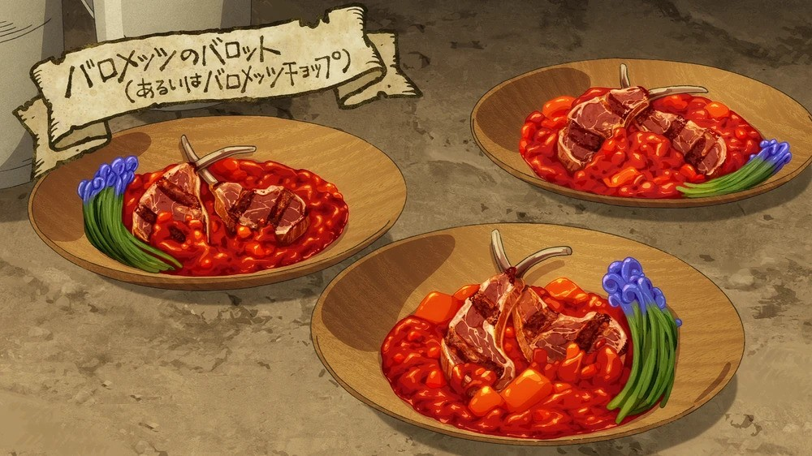

Barometz Balut

DESCRIPTION
A dish prepared by Senshi from an unripe Barometz fruit.
Although the Barometz looks like lamb, it tastes more like crab.
INGREDIENTS
- 1 unripe barometz fruit
- 500 grams of barometz sprouts
- 2 cloves of garlic
- 2 tablespoons of wine
- salt and pepper
INSTRUCTIONS
- Cut open the barometz fruit
- Chop the ribs of the baromtez apart into slices
- Add seasonings and cook over a flame
- Once both sides are brown, put in a pan
- Pour in wine, put a lid on the pan, and let it steam
- After boiling the rind of the vegetable part, peel off the skin and cut into chunks
- Put the vegetable in another pan, add in the garlic, and simmer together
- Pour the finished sauce over the meat, chop the sprouts and add as garnish, then serve